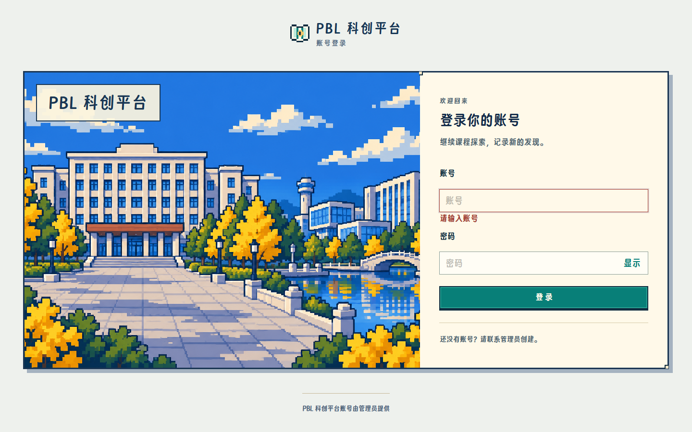
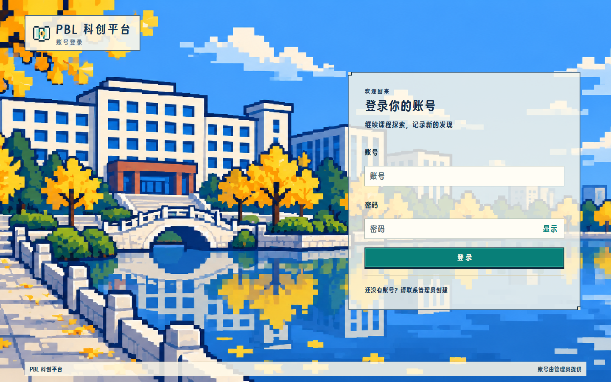
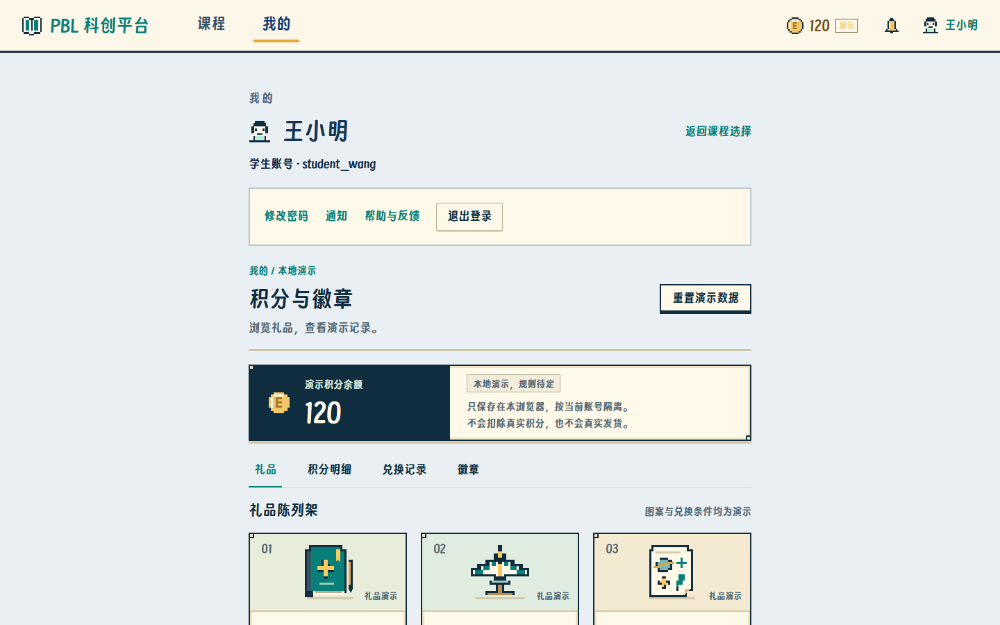
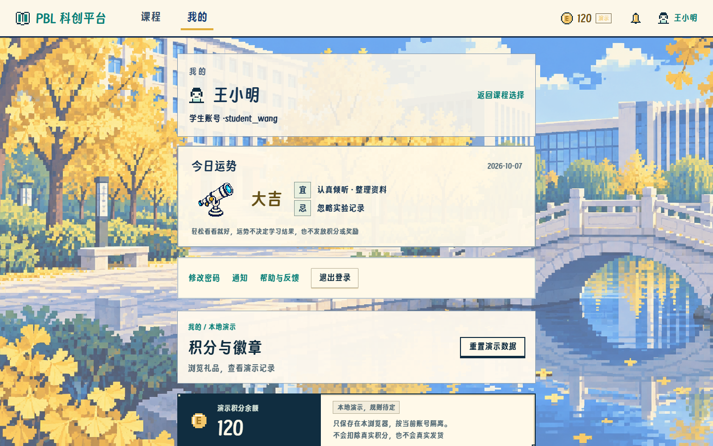
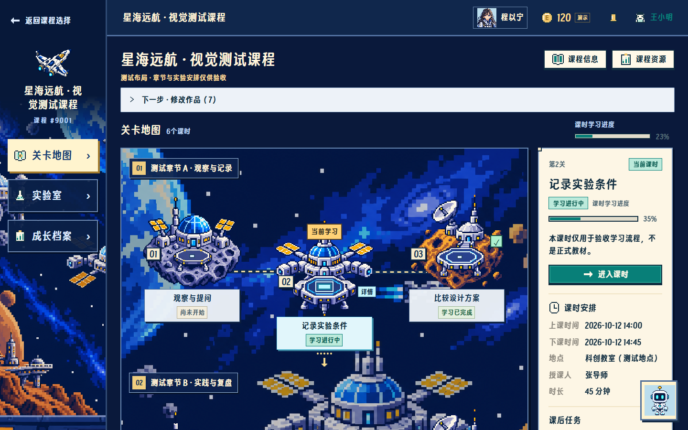
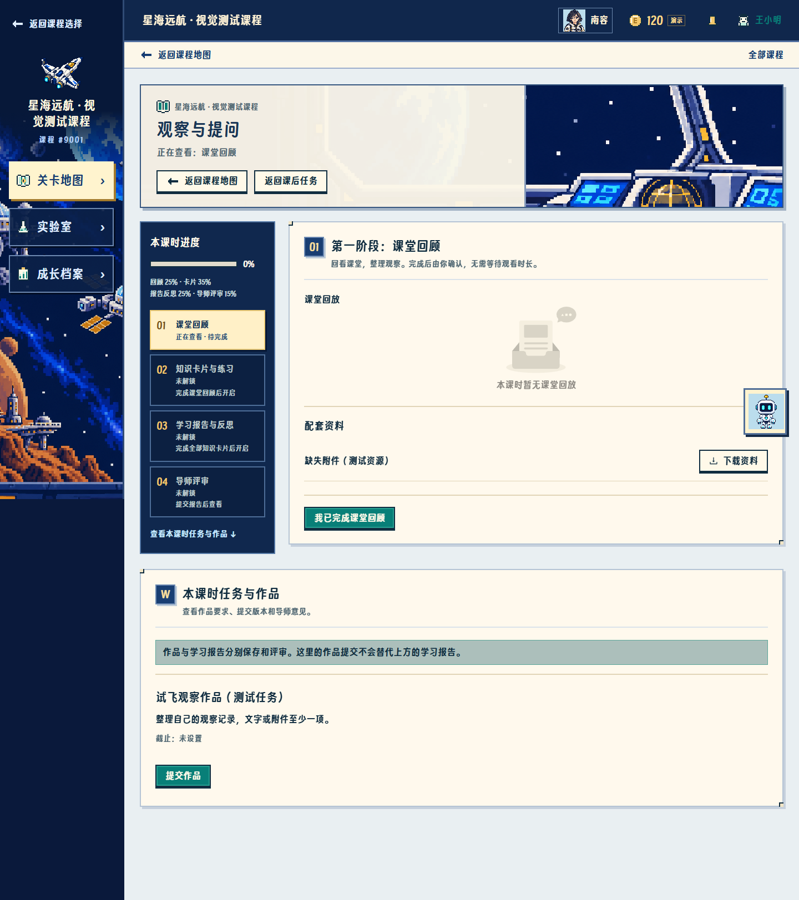
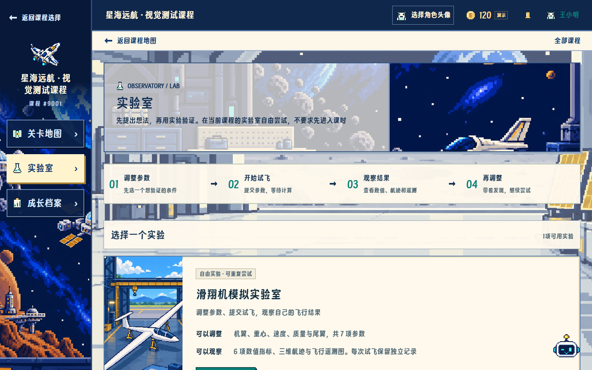
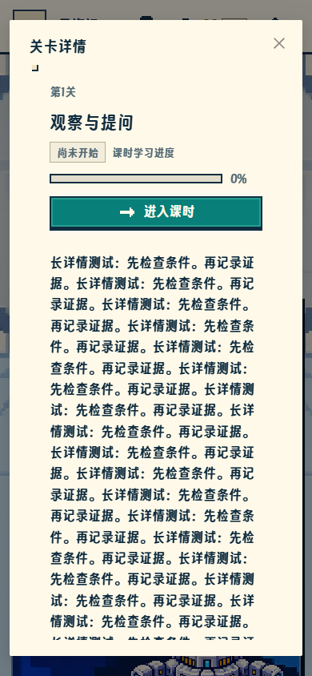
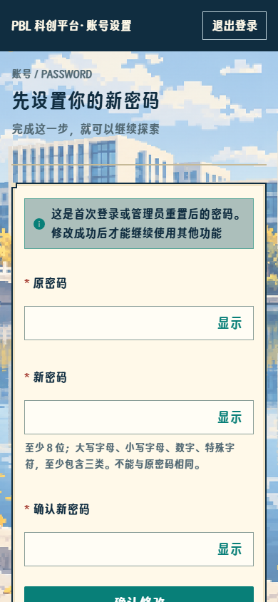

第2步视觉补修 · 真实页面验收
全部为真实 Edge 中的 React 页面截图，图片只作为场景或素材。课程 9001/9002、章节、地点与教学材料均为隔离合成测试；不是正式星海远航教学内容
尺寸为浏览器模拟，不等于真机验收。聊天回答为隔离回环测试 provider；运行预览仍按实际启用状态显示，未启用时不伪造成功。业务回归通过不代表审美已获用户认可
登录 · 前后对比

本轮前历史截图，保持原文件
本轮补修实际页面我的 · 前后对比

本轮前历史截图，保持原文件
本轮补修实际页面地图 · 前后对比

本轮前历史截图，保持原文件本轮补修实际页面学习 · 前后对比

本轮前历史截图，保持原文件 本轮补修实际页面
本轮补修实际页面实验 · 前后对比
 本轮前历史截图，保持原文件
本轮前历史截图，保持原文件
本轮补修实际页面登录
课程选择
我的 / 今日运势
地图默认
居中详情
学习透明标题
实验封面
机器人浮窗
交互与状态样例

detail-long-mobile.png
forced-password.pngfortune-failed.pnginteraction-focus.pnginteraction-hover.pnginteraction-key-pressed.pnginteraction-mouse-pressed.pnginteraction-reduced-motion.pnginteraction-touch-pressed.pnglogin-200-percent-equivalent.pnglogin-disabled.pnglogin-image-error.pnglogin-keyboard-height.pnglogin-loading.pngrobot-fallback.png